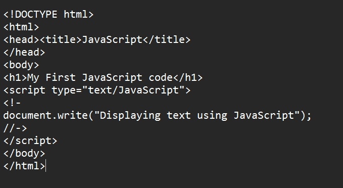
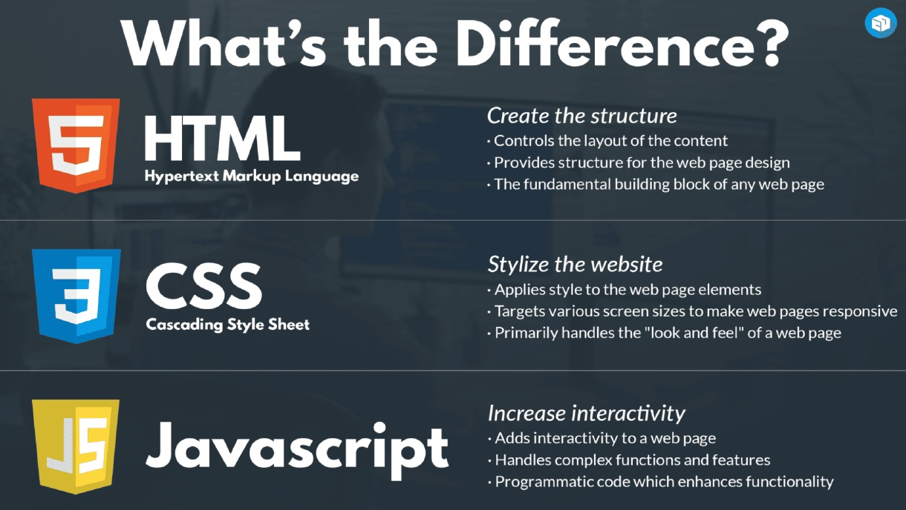

E-Portfolio
← Back
Lesson 1 : Introduction to JavaScript
Purpose
To create dynamic, interactive user experiences, handling everything from UI rendering (like React for Facebook) and content loading to real-time updates, personalized feeds, video controls (captions, volume), and tracking user activity (Meta Pixel).
Static Website VS Dynamic Website
JavaScript
- The MOST popular & widely used scripting language on the internet.
- Recognized & works in all major browsers.
- Developed by Brendan Eich of Netscape under the name Mocha, which was later renamed to LiveScript.
- Opened to Internet Explorer in 1996.
- Enhances webpages and can be used to build video games.
- A trademark of the Oracle Corporation and is licensed for use to other entities like Mozilla Foundation.
- A client-side, high-level scripting, interpreted & object-oriented.
Client-side - the codes and formulas are processed right on the user’s own computer.
High-level scripting - codes are written in words that are close to English as possible.
Interpreted – the program is passed as source code then converted into machine code.
- Designed to add interactivity and functionality to the Web site. Thus making the contents more dynamic and the elements are enhanced.
- Case-sensitive.
- Semi-colons at the end if each statement are not required.
What can JavaScript do?
- Can react to events - certain events such as mouse clicks, and pre-loading of webpage can lead to executing codes written in JavaScript.
- Can be used to validate data - form requires user input, instead of using serverside scripting, JavaScript can be used to validate it and thus save processing time.
- Can be used to create cookies - Used to save or retrieve information from a visitor’scomputer. This can be used to monitor the visitor’s
internet habit and preferences.
- Can enhance a webpage
Features of JavaScript
- Supports all structured programming syntax in C
- Has dynamic typing, the value of the variable is dependent on what the value was assigned to it even during run time, the type can still change.
- Can run locally in a Web site, so interaction within the user and the site is faster or more responsive.
- Can detect user actions, such as mouse clicks, which HTML could not do alone.
- Can be combined with CSS to produce DHTML. DHTML can make site more flexible by adding effects such as message scrollers, mouse trails and falling snow.
Characteristics of JavaScript
- Lightweight programming language
- Inserted into HTML pages
- Supported by all modern web browsers
- Easy to learn and encoder-friendly
- Quick to download effects
- No need for any extra tools to write
- License-free
- Has a thriving and supportive online community of JavaScript developers and information resources
Disadvantages of JavaScript
- Some browsers do not support JS. Examples are PDA and mobile phones do not execute JS. Some browsers disable execution of JS as a security precaution.
- Any secret embedded in JS could be extracted by a determined adversary
- JS and DOM (Document Object Model) provide potential for malicious authors to deliver scripts to run on a client computer via web.
- Web site authors cannot perfectly conceal how their JS operates because the code is sent to the client.
- Source codes that have been deliberately made hard to understand can be reverse engineered so your codes are still exposed to possible threat.
Note
A script is a set of computer instructions or commands that puts together or connects existing components to accomplish a new related task. JavaScript is a powerful scripting language used to create web functionalities. A text editor and a web browser are the tools needed in JavaScripting. The basic components of JavaScript language are objects, methods and properties.

Browser Output

↑ Back to Top